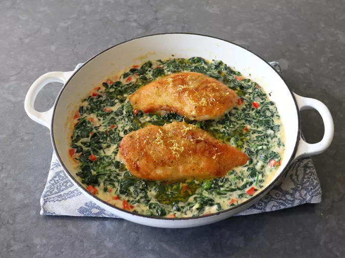

Chef John's Chicken Florentine

Ingredients
- 1 pound fresh baby spinach
- 2 skinless, boneless chicken breasts (8 to 10 ounces each)
- 2 teaspoons kosher salt
- 1/2 teaspoon freshly ground black pepper
- 1 pinch cayenne pepper
- 1/4 cup all-purpose flour
- 4 tablespoons olive oil, divided, plus more for drizzling (optional)
- 1 tablespoon butter
- 4 cloves, garlic, minced
- 1/4 cup minced shallots or onions
- 3 tablespoons white wine
- 1 tablespoon lemon zest, plus more to garnish
- 1/2 cup diced red bell peppers
- 1 cup of heavy cream
Directions on How to Cook
- Wilt spinach in a large pot over medium-high heat. As soon as the spinach turns green, quickly transfer to a strainer and squeeze out most of the water. Transfer to a cutting board and roughly chop. Reserve until needed.
- Season chicken on both sides with salt, black pepper, and cayenne pepper, and coat evenly all over with the flour.
- Add 2 tablespoons olive oil to a nonstick pan, and heat over medium-high heat. Place chicken in, and once breasts are sizzling in the oil, reduce heat to medium. Cook breasts until just cooked through and a golden brown crust has formed, 4 to 5 minutes per side. Turn off heat and reserve.
- Add remaining 2 tablespoons of olive oil and butter to the pan you plan to serve chicken in (see Chef’s Note). Turn heat to medium-high, and once butter melts, add garlic, shallots, and a pinch of salt. Cook, stirring, for about 1 minute. Add wine, and cook, stirring, until the wine reduces by half, a few minutes more.
- Add lemon zest and red peppers, and cook, stirring for another few minutes. Stir in cream, and bring mixture up to a simmer. Season to taste with salt, black pepper, and cayenne.
- Once cream simmers for a few minutes, and begins to reduce and thicken slightly, reduce heat to medium and stir in wilted spinach until evenly combined with cream sauce.
- Place chicken back into the pan, and simmer on medium, until chicken is heated through, 3 to 4 minutes.
- Serve with a drizzle of olive oil and another light grating of lemon zest.
Back To home